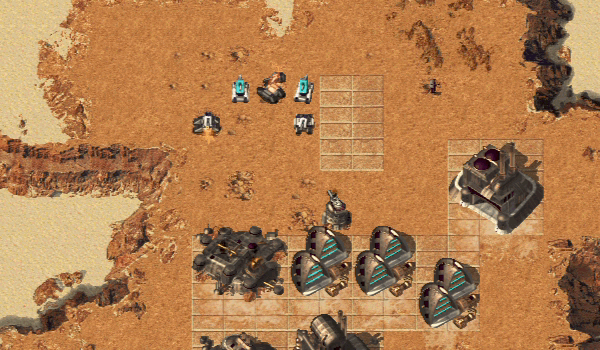

Do not stop building
Idle factories mean you fall behind.
OpenRA
OpenRA rebuilds classic base-building RTS games with modern controls, bots, and multiplayer.
Download OpenRA
Basics
Strategy
Idle factories mean you fall behind.
Your army needs money to keep growing.
Group units so you can react faster.